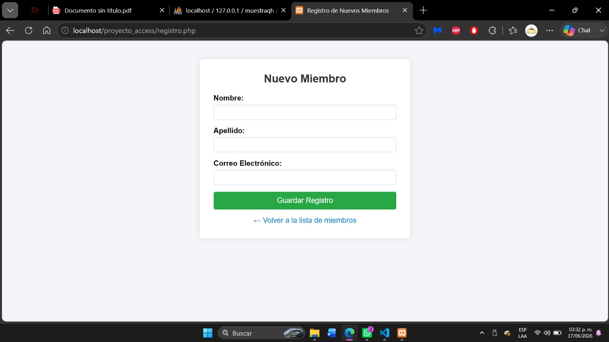
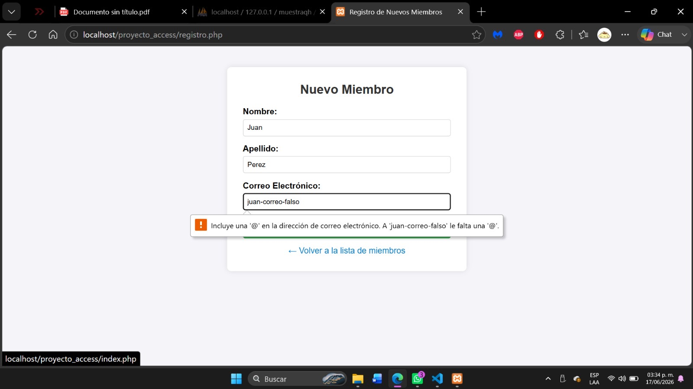

Práctica 14
Manejo y Validacion de informacion de una B.D mediante pagina web


¿Qué hice?
En esta práctica creé un formulario web para registrar nuevos miembros en una base de datos de Access.
El formulario solicitaba el nombre, apellido y correo electrónico del usuario.
Además, se implementaron validaciones para evitar campos vacíos, verificar que el correo tuviera un formato correcto y evitar registros duplicados.
Cuando toda la información era válida, los datos se guardaban automáticamente en la base de datos.
Comandos utilizados
- trim(): Limpia espacios innecesarios en los datos ingresados.
- empty(): Verifica que los campos no estén vacíos.
- filter_var(): Valida que el correo electrónico tenga un formato correcto.
- PDO: Permite conectar PHP con la base de datos Access.
- prepare(): Prepara las consultas SQL.
- execute(): Ejecuta las consultas.
- SELECT COUNT(*): Comprueba si el correo ya existe en la base de datos.
- INSERT INTO: Guarda un nuevo registro en la tabla de miembros.
- date(): Registra la fecha y hora del nuevo miembro.